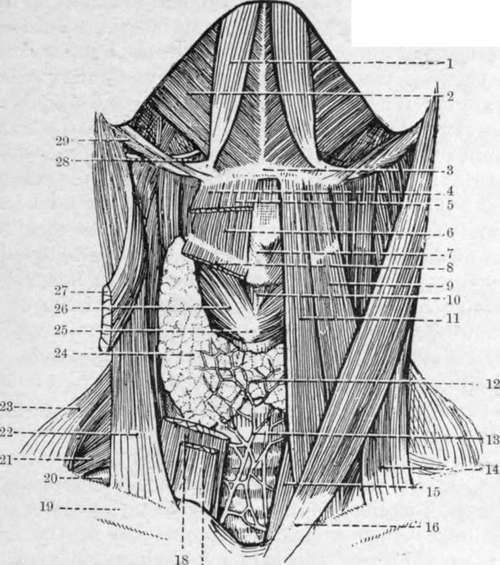

The Infra-Hyoid Region. Part 3
Description
This section is from the book "Surgical Anatomy", by John A. C. MacEwen. Also available from Amazon: Surgical Anatomy.
The Infra-Hyoid Region. Part 3
The thyroid gland lies in front of the trachea (under the sterno-hyoid and thyroid muscles and part of the sterno-mas-toids), and is enclosed in a sheath of cervical fascia, which connects it to the lower part of the larynx and upper part of the trachea. Owing to this connection, the gland moves up and down with deglutition, as, of course, do most tumours of the gland. It consists of two lateral lobes, of which the right is generally the larger, and an isthmus. The borders are rounded on their outer surface, and broader below than above. They are about 2 inches long, 1 1/4 inches broad, and ¾ inch thick. The apex rests against the upper and posterior part of the thyroid cartilage, and receives the superior thyroid vessels (from the external carotid). The base is at the level of the sixth ring of the trachea, and receives at its external border the inferior thyroid vessels from the thyroid axis. The blood is returned by three veins-superior, middle (to internal jugular), and inferior thyroid (to innominate). The inner surface is moulded against the trachea and oesophagus below, with the inferior laryngeal nerve between them, and the larynx and pharynx above. The external rounded border is deeply grooved posteriorly by the common carotid artery (which frequently transmits pulsation to enlargements of the gland), and is in relation to the inferior thyroid artery, sympathetic cord, and prevertebral muscles. The isthmus lies about the level of the third tracheal ring, and in the middle line is superficial. As the vascular system of the thyroid does not extend from side to side, the isthmus may safely be divided in the middle line. A communicating branch of the superior thyroid artery of either side, however, frequently crosses immediately above it, and should be avoided. The thymus gland in the child lies in close contact with its lower border, which also is related to the inferior thyroid veins. A small pyramidal lobe, arising from the upper border of the isthmus and part of a lateral lobe, sometimes projects upwards in front of the larynx, being attached at its apex to the hyoid bone by a ligamentous structure. The gland is enervated by branches of the cervical sympathetic, which probably communicate in the medulla with those supplying the eye, thus helping to explain the exophthalmos seen in some forms of goitre. The lymphatics run to the deep cervical and superior mediastinal glands. The gland is generally larger in females than in males, and may increase in size during menstruation. Pathological enlargements of the thyroid are generally called goitres, and these are of various types. They occur more commonly in females, and particularly on the right side. Such enlargements may compress and cause deviation of the trachea, thus giving rise to dyspnoea ; the oesophagus, causing dysphagia; and the recurrent laryngeal nerve, causing paralysis of the intrinsic muscles of the larynx and consequent aphonia. The thyroid vessels enlarge, and are thin walled ; the large vessels of the neck are displaced laterally, and the tumour may extend down beneath the sternum and clavicles. In cases of goitre a thyroidectomy, or partial excision of the gland, may be performed through a transverse curved incision over the swelling, with the convexity downwards,* which extends through the skin, platysma, and deep fascia, including the anterior jugular veins, outwards over the anterior border of the sterno-mastoid muscles. The lateral muscles and deep fasciae are now shelled laterally from the capsule of the tumour, or divided, and the lateral mass is projected forwards, the upper cornu defined, and the vessels ligatured. Then the isthmus is divided in the middle line, the mass turned outwards, and the inferior vessels ligatured as far from the larynx as possible to avoid injury to the recurrent laryngeal nerve. If a local anaesthetic be used, it is a further safety to ask the patient to say ' ah ' while ligaturing these vessels, as the ability to say this ensures that the nerve is acting. The other lobe may then be treated, taking care to leave in all cases a portion of gland to prevent occurrence of myxoedema.
Fig. 14.-Dissection of the Front of the Neck. (The area bounded on either side by the anterior belly of the digastric and below by the body of the hyoid bone is the submental triangle.) (From Buchanan's " Anatomy.")
1. | Anterior belly of digastric. | 17· | Sterno hyoid. |
2. | Mylo-hyoid. | 18. | Sterno-thyroid. |
3. | Body ot hyoid bone. | 19. | Clavicle. |
4. | Anterior belly of onio-hyoid. | 20. | Subclavian artery (third part). |
5. | Sterno-hyoid. | 21. | Brachial plexus. |
6. | Thyro-hyoid. | 22. | Clavicular head of sterno-cleido-mastoid. |
7. | Isthmus of thyroid cartilage. | 23. | Trapezius. |
3. | Sterno-thyroid. | 24. | Lateral lobe of thyroid body. |
ο- | Anterior belly of omo-hyoid. | 25· | Cricoid cartilage. |
ίο. | Crico-thyroid membrane. | 26. | Crico-thyroid muscle. |
II. | Sterno-hyoid. | 27. | Sternal head of sterno-cleido-mastoid. |
12. | Isthmus of thyroid body. | 28. | Hyo-glossus muscle and hypoglossal nerve. |
τ3· | Inferior thyroid plexus of veins. | ||
14. | Clavicular head of sterno-cleido-mastoid. | 29. | Posterior belly of digastric and stylohyoid. |
IS· | Sterno-thyroid. | ||
ι6. | Sternal head of sterno-cleido-mastoid. |
Developmentally, the gland consists of three segments, the middle being represented by the isthmus and the pyramidal lobe when present, which latter communicates by the thyro-glossal duct with the base of the tongue at the foramen caecum. Thyroid cysts not infrequently arise in connection with the remains of this duct, and accessory lobules are sometimes also found in the hyoid region. The parathyroid bodies are two small round masses found on either side toward the lower border of the lateral lobes.
The oesophagus is about 10 inches in length, and commences opposite the sixth cervical vertebra, pierces the diaphragm opposite the tenth dorsal vertebra, and immediately afterwards terminates at the cardiac orifice of the stomach. The cervical portion varies in length, like the trachea, with the position of the head. In front of it lies the trachea, behind it (and deep fascia) the prevertebral muscles. While at its commencement it is mesial, it soon deviates to the left, where it is more closely related to the thyroid gland, common carotid artery, and recurrent laryngeal nerve, than on the right. On either side are numerous lymphatic glands, which drain this portion of the oesophagus, and are liable to enlarge in carcinomatous disease, and so cause pressure on the oesophagus. Its lumen is compressed antero-posteriorly. It is narrow at its commencement (½ inch), and hence impaction of foreign bodies and acid burns, causing subsequent cicatricial stenosis, occur most generally at this point, which is situated about 6 inches from the teeth, and is hence beyond the reach of the finger. In carcinomatous disease of this portion of the oesophagus the left recurrent laryngeal nerve is often pressed on, and when stricture of the tube results, a left-sided cesophagotomy may be done to relieve it (or to remove an impacted foreign body). An incision is made internal to the anterior margin of the sterno-mastoid from the thyroid cartilage to the sterno-clavicular articulation. The subcutaneous tissues, platysma, anterior jugular vein, and deep fascia, are divided, the sterno-mastoid retracted outwards, the sterno-hyoid and -thyroid retracted inwards, and the omo-hyoid and pretracheal fascia divided. The thyroid gland is now drawn forwards and inwards, the common carotid outwards, the inferior thyroid artery divided, the trachea, and the oesophagus dilated by a bougie, recognized, and a vertical incision made in the latter near its vertebral aspect, so as to avoid the recurrent laryngeal nerve. Where a portion is cut out the operation is known as ^esophagectomy, and where an opening on to the neck is established, ceso-phagostomy. Save for the removal of a foreign body or very limited growth, a gastrostomy is a better operation as a rule.
Continue to: